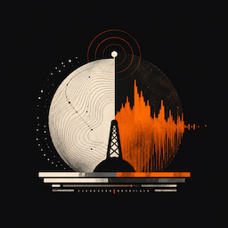
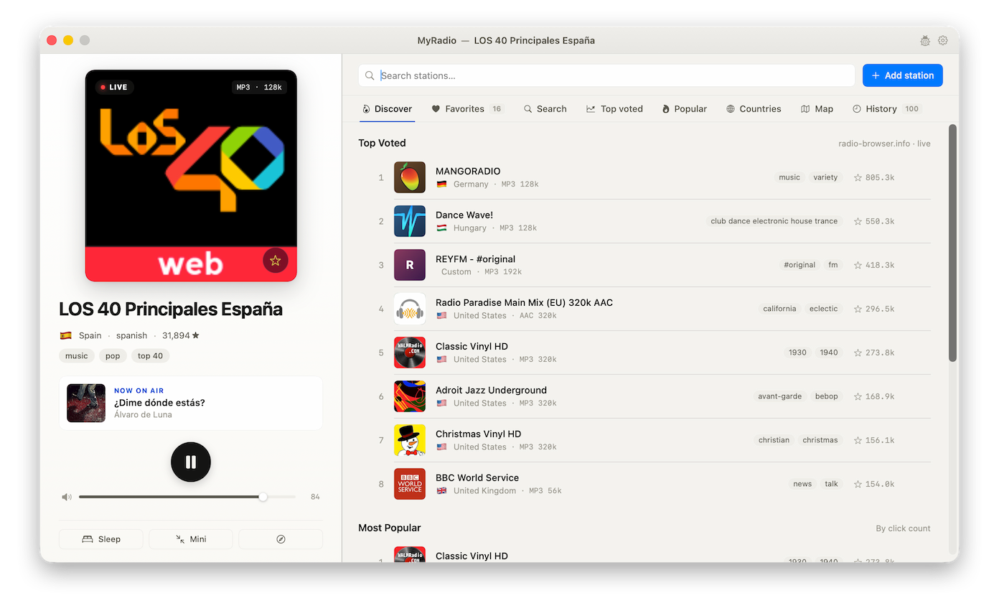

📡
40,000+ stations
The full radio-browser.info catalog at your fingertips, refreshed live.

MyRadioInternet radio,
right where it belongs.
A native macOS client for radio-browser.info — 40,000+ stations, mini-player, sleep timer, Now Playing.

Built around the radio-browser.info community catalog — with the polish of a native Mac app.
The full radio-browser.info catalog at your fingertips, refreshed live.
Top Voted, Most Popular, Countries, Map, and full-text search across the catalog.
Pin the stations you love. Revisit anything you've played.
Add any stream URL by hand or import an M3U / PLS playlist.
A compact window that gets out of the way. Floats above everything when you want.
Drift off to a station — MyRadio fades out and posts a system notification.
Media keys and Control Center integration, just like Music.app.
Follows your system theme and accent color. 9 UI languages, including RTL Persian.
Built-in update check via the GitHub Releases feed. No telemetry, no auto-updater service.
MyRadio is unsigned and unnotarized — locally built or downloaded, you may need to clear the quarantine flag once.
Grab the latest MyRadio-X.Y.dmg from the Releases page.
Open the DMG, drag MyRadio.app into /Applications, and eject.
If Gatekeeper blocks it, open System Settings → Privacy & Security and click Open Anyway. Or run once in Terminal:
sudo xattr -cr /Applications/MyRadio.app